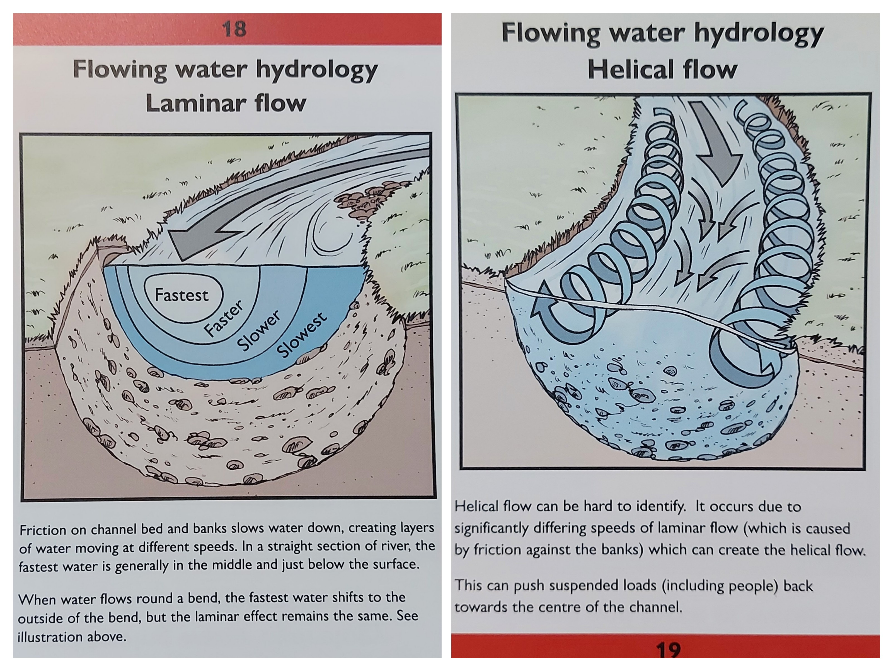
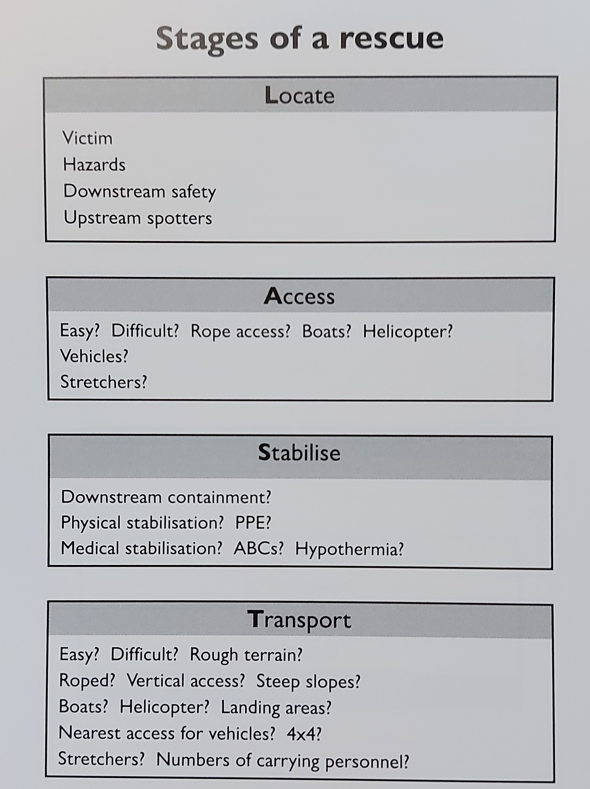

3 Safe Work Procedures and Practices
3.1 Driving
3.1.1 General Procedures and Practices
Conduct a “pre-trip” vehicle check. Use a Vehicle Pre-trip Inspection and Mileage Log to track activity. Report deficiencies and do not use if equipment is in unsafe condition.
Make notes of required maintenance in the mileage logbook when it is required and include “checking the logbook for required repairs” at the time of each inspection.
Drive defensively at all times.
Ensure all vehicle occupants are wearing seatbelts. You are responsible for your passengers.
Do not exceed posted speed limits.
Avoid night driving when possible, never drive when distracted or overly fatigued. Limiting the length of field days can help reduce the risk of injury when driving.
Drive safely and drive to the existing road conditions. Lower speed as required. Stay home if conditions are hazardous and risk of injury is high. Be aware of:
Visibility reduced by dust, fog, rain and snow;
Narrow roads with over width vehicles;
Steep favorable and adverse gradients;
Slippery and variable road surface conditions due to loose gravel, snow, ice or mud;
Other users, wildlife
Use vehicle for intended use only (purpose and weight limitations).
Drive with vehicle lights on at all times.
Secure all heavy or sharp objects in the cab of the vehicle.
Respect that loaded logging trucks have the right of way on single lane roads.
Tailgating is driving too close behind other vehicles. It is extremely cangerous as it can lead to accidents if they vehicle in front of you brakes suddently or is in a collision/crash you can smash into them. Leave a sufficient distance in front of the vehicle in front of you, even more so for logging trucks. A good rule of thumb is to leave 3-4 seconds of time between when the vehicle in front of you passes a specific location and when you pass it.
Never chase a runaway vehicle.
Stay on your side of the road.
Avoid distracted driving, do not use cell phone unless stopped and parked safely.
COVID 19 (COVID)
Self-assess daily for COVID symptoms and self-isolate and test if you have symptoms.
When possible, travel in separate vehicles. When a crew is required to travel together, sit in seats as far from eachother as possible, wear masks and when possible leave the windows open for good ventilation.
All vehicles need to have paper towel, min 70% alcohol hand sanitizer and non-medical grade masks. Ensure this is present before leaving.
When getting in vehicle wipe down all initial touch points with min 70% alcohol and paper towel (ex. Vehicle door, radio, steering wheel, shifter, seat belt). Sanitize all surfaces of both hands.
After opening vehicle door at all stops and worksites use hand sanitizer on surfaces of both hands. Put on non-medical mask if entering building (ex. Gas station, restaurants) or working with others where you cannot keep min 2m distance. Upon exiting vehicle close door with elbow.
3.1.2 Resource Road Safety
Do not exceed 80kph or posted speed limits. Drive at a safe and controlled speed, and avoid sudden maneuvers.
Pass trucks or equipment only after you receive a clearly visible and/or audible signal from the operator.
Drive with headlights on at all times, whether it’s day or night, good or bad visibility.
Ensure you have the necessary equipment on board in case of emergencies. This can include but is not limited to :
- tow strap
- battery booster or booster cables
- fire tools (polanski, shovel, backpack extinguisher)
- satellite communicator
- radio
- first aid kit
- extra food and water
Before heading out, research and plan your route. Check for potential hazards, weather conditions, and local regulations or restrictions.
Familiarize yourself with your vehicle’s capabilities and limitations for off-road terrain. Ensure you have proper all terrain tires. Be aware of ground clearance, approach and departure angles, and four-wheel-drive systems.
3.1.3 Radio Use
Complete radio check and ensure correct frequency prior to entering radio controlled area.
Do not drive on radio controlled roads without the radio on and turned up. Expect oncoming traffic at all times.
Call your position according to the local radio protocol and signage.
Notify other radio equipped vehicles of oncoming non-radio equipped traffic.
Do not use road radio channels for conversations, use only for road traffic protocols.
Other than traffic control, pull over and safely park when talking on the radio for an extended period of time.
3.1.4 Parking and Key Management
When working in the field, it is important to manage your keys. Always carry a spare key and keep it hidden somewhere on the vehicle that can be accessed if keys are lost. As a good practice and particularly important if you do not have a spare key - hide primary keys somewhere on your vehicle. Choose a location that is hard to see but easy to reach (ex: in gas cap or under bumper). Notify your co workers where they are in case of emergency.
Park clear of traffic, away from active areas in pullouts or extra wide straight sections of road.
Park facing the direction of exit with access for service/towing activities.
Ensure the parking brake is on and the transmission is in 1st gear or park.
On steep grades, use wheel chocks and always turn the wheels towards the nearest ditch.
Never park on a curve especially on the outside curve of a road.
When turning around, back into the cut bank of the road and not towards the outside bank.
Use flares where required.
3.3 Electrofishing
3.3.1 Preparatory Procedures
A crew leader must be designated for all backpack electrofishing activities.
It is the crew leader’s responsibility to ensure that all equipment is in “safe working order”.
An emergency response plan must be prepared and reviewed with all crew members.
The crew leader must ensure all crew members have received instruction in the fundamentals of electrofishing safety.
The crew leader and at least one additional crew member must have up-to-date CPR and First Aid training.
Each electrofishing site must be visually inspected for hazards such as deep holes, submerged logs, etc. before commencing electrofishing operations.
In order to aid in identifying underwater hazards, all crew members must be equipped with polarized sunglasses. Glasses also protect against eye injury caused by sticks and branches. Wide brimmed hats or peaked caps are also beneficial in increasing the effectiveness of polarized glasses.
All crew members must be equipped with long armed gloves that are non-conductive, waterproof and inspected to be free of leaks. Gloves must be worn at all times during electrofishing operations.
All crew members must be equipped with chest waders that are non-conductive, waterproof and inspected to be free of leaks. Chest waders must be worn at all times during electrofishing operations by team members entering the water. Wading belts are to be worn at all times.
All crew members must agree on a system of communication during electrofishing operations.
Backpack electrofishing units must be turned off and the battery disconnected before making any connections or part replacements. Start-up Procedures
All crew members must be notified and acknowledge their preparedness prior to the commencement of electrofishing operations. The unit operator must make sure that personnel are clear of the anode before turning on the power. Hand signals are a useful way of conveying these messages.
Check operation of all switches and gauges. This should include high voltage check, anode switch, power switch and mercury tilt switch, audible tone generator and light. Set controls to appropriate levels. The minimum voltage possible to obtain the desired results should be used to avoid excessive harm to the biota and to minimize the effects of accidental shock.
3.3.2 Operational Procedures
Operate slowly and carefully. Footing in most streams is poor and most falls occur when crew members are hurrying. Operations should cease when fatigue sets in.
Team members must not place their hand(s) into the water when the power is turned on.
Electrofishing units must be shut off prior to entering or leaving the water and the battery terminals disconnected (or generator shut off) when not in use or when transporting the unit.
Life jackets or Personal Floatation Devices (PFDs) must be worn where the crew leader considers the water is of sufficient depth or velocity for a life jacket or PFD to be effective as protection from risk of drowning. Life jackets and PFDs must be approved by Transport Canada or Canadian Coast Guard. Electrofishing should not be carried out where water depth is greater than waist deep.
A crew member must immediately leave the water if wetness is detected in gloves or waders (by leaks, rain or perspiration) and obtain dry equipment before returning. Mild dampness from perspiration or humidity is considered normal.
Electrofishing operations must cease during inclement weather. (e.g. periods of any lightning or moderate rain).
COVID 19
As electrofishing often requires the “fisher” and “netter” to be within 2m of eachother masks are required to be worn by both crew members.
Wear disposable gloves when assembling equipment or wipe down all touch points after assembly.
3.4 Culvert and habitat confirmation assessments
See driving procedures including radio use and parking.
Sometime parking on the shoulder of resource roads is the only practical way to assess a site. When doing so place a traffic cone 2m behind the back left wheel to alert oncoming traffic.
Wear waders and wading boots or a non-slip rubber boot when working in the stream. Carefully assess your footing and be ready for slippery surfaces.
Use 2 walking poles when conducting in stream surveys. Always maintain 3 points of contact with poles and your feet. This allows for much greater stability and avoids the risk of injury. As the in stream substrate typically consists of cobbles and boulders, it can be very painful when falling. Be cautious of foot placement to lower risk of foot entrapment. Poles are often used in photos to have a frame of reference for measurements of stream characteristics. One pole can be used for scale, while the other one can remain in hand as a stabilizer.
Carry bear spray with you at all times when in the field. You never know when you’ll need to use it.
Always carry personal first aid kit, water, extra clothes, inreach satellite communicator and food (ex. Power bar) in your vest in case of an emergency.
High visibility field vest should be worn to avoid being mistaken for an animal by hunters.
Navigating to sites often requires the use of handheld devices such as phones, two-way radios or GPS which should either be used by a non-driving crew member or mounted on the windshield where they can be viewed without distracting the driver.
Touching base with the call in person throughout the day is essential so that your last known location is known and to minimize the potential for false alarms should you not check in on time at the end of the day. Inreaches should be tested between crew members and between crew members and check in people before going in the field.
3.5 Swiftwater rescue and safety
Most of our field work involves working in small streams or creeks. Sometimes we can find ourselves in larger systems that have fast flowing water. It is important to be prepared and to be safe. Below are some best practices for swiftwater rescue and safety.
- Never put your foot down if you are being swept away. This will prevent foot entrapment.
- Never tie a rope around a rescuer. Attach a line to a quick release strap if present.
- Always deploy upstream spotters to know what is going to be coming down toward you.
- If you are rescuing someone, wear a PFD and a helmet.
- Always have a backup plan.
- Never count on the victim to help in his or her own rescue.
- Never tie a tension line at a right angle.
- Never lose contact with the victim.
- In addition to drowning, other dangers in swift water rescues include hypothermia, trauma, remote areas, and frightened victims.
- Water in swift water rescues is powerful but predictable. Marking water levels and understanding factors such as eddies (calm water behind obstructions), hazards (underwater obstructions), and “keepers” (areas where victims may be stuck) can aid decision-making.
It is important to understand the flow of a stream. Understanding where flow velocities are highest will help you navigate watersheds more efficiently and reduce the risk of injury.
 Source: Raven Rescue Water Rescue Field Guide
When attempting a rescue, consider the questions contained within the L.A.S.T. stages of rescue, outlined in the image below.
 Source: Raven Rescue Water Rescue Field Guide
Swiftwater rescue PPE equipment list:
- Helmet
- Knife
- Gloves
- PFD with quick release harness
- Drysuit
- Throwbag
- Boots
- Whistle
3.6 Working Alone
Working alone means working in circumstances where assistance would not be readily available to the worker in case of an emergency. There can be circumstances in the field where the worker will be conducting a survey alone. The lone worker must abide by the following procedures:
Designate a contact person to check in with on a pre planned schedule. Arrange a meet up time and place before getting separated.
The worker must carry a functioning communication device such as a cell phone, two-way radio, and a inreach satellite communicator. Carrying all three is highly recommended. Ensure radios are charged fully every second night. When working in areas out of cell range a satellite communicator is required.
Carry bear spray. Make a lot of noise periodically to alert bears in the area of your presence. Optionally, it can be effective to have a bluetooth speaker to play music.
If the lone worker fails to check in, then the contact person must initiate search procedures. See Procedures for Failed Check-In section of Field Safety Plan.
Carry water, food, extra clothes, a first aid kit (with emergency blanket) and materials you would need to make a fire (lighter) in case something unforeseen happens.
3.7 Wildlife Encounters
3.7.1 Bears
| Situation | Recommended actions |
|---|---|
| Bear does not know you are there | Move away undetected. Go back the way you came or take large detour around. If you must go ahead do so slowly and cautiously. DO NOT RUN Keep your eye on the bear. Watch for changes in behavior. Be careful not to crowd or surprise bear (especially Grizzlies). Do not shout if it is unaware of your presence. |
| Bear becomes aware of you | Calmly and from as far away as possible identify yourself as human. Talk to the bear in a low, respectful voice. Wave your arms slowly. Increase the distance between you and the bear. If possible, move upwind to give the bear your scent. When bear is aware and unconcerned take the opportunity to leave. Do not run. |
| If you hear bear vocalizations or see young bears in area | Be extremely cautious and leave the area the way you came. |
| If bear approaches you | Stop, stay calm, and assess the situation: is bear acting defensively (grunting, or another way? Don’t run. Group together if possible. Prepare deterrent (mace). Determine if bear is defensive or aggressive. |
| Bear approaching in a defensive (stressed) manner | Defensive bears are threatened or may be protecting food. They show stressed behaviour such as rapid huffing, salivating, roaring, paw slapping, guttural noises, open mouthed jawing and charging. When bear approaches or charges stand your ground (physical contact is rare). Most charges stop short. Appear non-threatening. Talk to bear in calm voice and let it know you mean it no harm. Don’t shout or throw things acting defensively. Try to increase distance between you and the bear (keep your eye on it). Do not run. Use deterrent only as last defense. |
| In the case of a defensive attack | If bear physically contacts you in a defensive attack play dead: fall on ground on your front, protect your neck. If rolled over continue to roll over to face. Stay on ground till bear leaves. If attack is prolonged it is no longer defensive. |
| Bear approaching in non-defensive manner | Non defensive bears show little stress. They look interested in you and intent on approaching you. Watch towards you confidently looking towards you intermittently. They seem intent on attack. If approached move away from bears path or trail. If bear is intent on you stand your ground. Your response needs to be assertive. Act aggressively: shout at bear, stare it in the eye, stamp feet, stand on stump or log, threaten bear with stick or log. If attacked use deterrent, fight with any weapon available with all your strength. Focus attack on bear’s face. |
Staying safe in bear country video: https://www.youtube.com/watch?v=s-zkGuh42l4&ab_channel=bearbiology
3.7.2 Cougars
- Make a lot of noise when working and walking
- Avoid cougar kills. Cougars cover their kills with dirt and leaves and return later. Be aware for circling birds and other scavengers; these could indicate there is a kill site nearby.
- If you encounter a cougar:
- Don’t run, this might trigger a pursuit
- Don’t turn your back, always keep the cougar in front of you
- If the cougar shows interest in you (staring, crouching, creeping, tail twitching):
- Make eye contact
- Make yourself look big
- Show your teeth, pretend to be a predator
- Make loud noises
- Arm yourself with anything you can find
- If the cougar attacks:
- Fight back, convince the cougar you are the predator and not the prey
- Yell or make loud, intimidating noises
- Focus your attacks on the cougar’s nose, face, and eyes
3.7.3 Moose
A moose will charge to ward off a potential threat. Assure the moose that you are not a threat.
- Signs of an aggressive moose:
- Walking in your direction
- Stomping its feet
- Peeling its ears back
- Grunting
- Throwing its head back and forth
- How to prevent and survive a moose attack:
- Back away with palms facing the moose
- Speak softly and reassuringly to it
- If the moose charges then get behind a large tree or rock, most moose charges are bluffs
- If the moose attacks you then fake death by curling up in a ball, protect your neck and back
3.8 Remote Working
Approximately 75% of the work done at New Graph Environment is remote from the employee’s home. Safe work practices are still important when working remotely.
3.8.1 Ergonomics
Ergonomics are an important part to any home office. Your home work space should meet basic ergonomic requirements in order to decrease risk of long term injuries. Listed below are a few guidelines:
- It starts with a good chair. Ensure your chair is properly adjusted so that your wrists are straight, with hands below or at elbow level, knees are level with hips and thighs parallel to the floor, feet are flat on the ground, and the top of your computer display is positioned at or just below eye level. Get a chair with proper lumbar support.
- Invest in a good mouse and keyboard that offer good wrist support and comfort.
- Buy a proper desk that has enough room for all your equipment and is of appropriate height. Adjustable desks are a good option since you can switch between sitting and standing positions.
- Do not sit in one place all day long. Make sure you get up and walk around and/or stretch throughout the day to relieve muscle and joint pain.
3.8.2 Mental and Physical Health
When working remotely, it is important to maintain your mental and physical health. Listed below are a few ways to reduce stress and improve your mental and physical health:
- Stick to a regular work routine and schedule every day, and switch off on your down time.
- Take a break every now and then to get up and walk around.
- If a task you’re working on is causing you too much stress then don’t be afraid to delegate or ask for help, avoid burnout and overworking yourself.
- Stick to a good work life balance, make time for socialising and enjoying your favorite hobbies/physical activities.
- Sun exposure is limited when working inside and it can therefore be hard to get your daily Vitamin D requirements, consider taking a supplement.
- Seasonal affective disorder can affect everyone and can cause a decrease in energy levels and change in mood in the winter time, ensure you go outside everyday and engage in regular physical activity to reduce stress levels.
- When leaving the house to go to a work related meeting be aware of road conditions when driving, even when walking (steer clear of ice to avoid nasty falls).